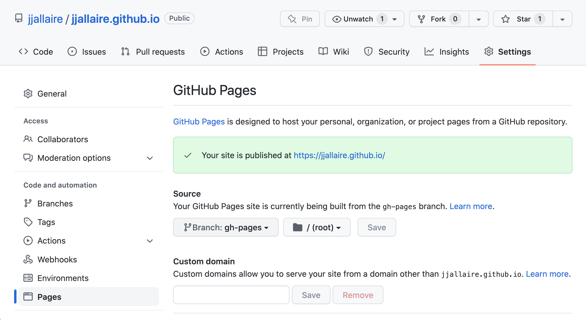

GitHub Pages
Overview
GitHub Pages is a website hosting service that enables you to publish content based on source code managed within a GitHub repository.
There are two ways to publish Quarto websites and documents to GitHub Pages:
Use the
quarto publishcommand to publish content rendered on your local machine.Use a GitHub Action to automatically render your files (a single Quarto document or a Quarto project) and publish the resulting content whenever you push a source code change to your repository.
We’ll cover each of these methods below, but first let’s take care of some pre-requisites.
Getting Started
To get started, you need to have a Git repository on your local machine that is synced to GitHub. For a given repository, the URL of the published website will be derived from the combination of your username and the repository name (e.g. https://username.github.io/reponame).
You can optionally configure a custom domain for a GitHub Pages site, but before exploring that ground you should get your site up and running with the default domain.
User Site
In addition to creating sites tied to various repositories, you can also create a user site that is served from your root user domain (e.g. https://username.github.io). This is an ideal place to publish a blog or personal home page. To create a user site:
Create a Git repo with the name
username.github.io(where “username” is your GitHub username) and sync it to your local machine.Set the Source branch for your user site to
gh-pages. For example:
Note that this step of explicitly setting the Source branch is only required for user sites (repository sites automatically use the gh-pages branch).
Ignoring Output
It’s important to note that you don’t need to check your _site or _book directory into version control (if you have done this in the past you know it makes for very messy diffs!). Before proceeding you should add the output directory of your project to .gitignore. For example:
.gitignore
/.quarto/
/_site/If you’ve already checked these files into source control you may need to remove them explicitly:
git rm -r _sitePublish Command
The quarto publish command is an easy way to publish locally rendered documents and websites. From the directory where your project / git repository is located, execute the quarto publish command for GitHub Pages:
quarto publish gh-pagesThe publish command will confirm that you want to publish, render your content, copy the output to a special gh-pages branch, push that branch to GitHub, and then open a browser to view your site once it is deployed. You can customize this behavior by providing the following command line options:
| Option | Behavior |
|---|---|
--no-prompt |
Do not prompt to confirm publish actions. |
--no-browser |
Do not open a browser after publish. |
--no-render |
Do not re-render prior to publish |
To publish a document rather than a website or book, provide the path to the document (note that you can publish only one document from a given GitHub repository):
quarto publish gh-pages document.qmdGitHub Action
Using the quarto publish gh-pages command to publish locally rendered content is the most simple and straightforward way to publish. Another option is to use GitHub Actions to render and publish your site. You might want to do this if you want publishing to be automatically triggered from commits, or to execute code and/or render your content on a continuous integration (CI) server.
There are a few different ways to approach rendering and publishing content. Below, we’ll provide a how-to guide for publishing with GitHub Actions. For more conceptual background on the various approaches, see the discussion on Rendering for CI.
Freezing Computations
To make sure that R, Python, and Julia code is only executed locally and not on GitHub, configure your project to use Quarto’s freeze feature by adding this to your _quarto.yml:
_quarto.yml
execute:
freeze: autoNow, fully re-render your site:
quarto renderIf you have executable code in your project you’ll notice that a _freeze directory has been created at the top level of your project. This directory stores the results of computations and should be checked in to version control. Whenever you change a .qmd file with executable code, it will automatically be re-run during your next render and the updated computations will be stored in _freeze.
Note that an alternative approach is to execute the code as part of the GitHub Action. For now we’ll keep things simpler by executing code locally and storing the computations by using freeze. Then, further below, we’ll cover Executing Code within a GitHub Action.
Publish Action
Add a publish.yml GitHub Action to your project by creating this YAML file and saving it to .github/workflows/publish.yml:
.github/workflows/publish.yml
on:
push:
branches: main
name: Quarto Publish
jobs:
build-deploy:
runs-on: ubuntu-latest
steps:
- name: Check out repository
uses: actions/checkout@v2
- name: Set up Quarto
uses: quarto-dev/quarto-actions/setup@v2
- name: Render and Publish to GitHub Pages
uses: quarto-dev/quarto-actions/publish@v2
with:
target: gh-pages
env:
GITHUB_TOKEN: ${{ secrets.GITHUB_TOKEN }}Once you’ve done this, check all of the newly created files (including the _freeze directory) into your repository and then push to GitHub. A GitHub Pages site will be created for your repository, and every time you push a new change to the repository it will be automatically rebuilt to reflect the change. Consult the Pages section of your repository Settings to see what the URL and publish status for your site is.
Executing Code
If you prefer, you can also configure a GitHub Action to execute R, Python, or Julia code as part of rendering. While this might reflexively seem like the best approach, consider the following requirements imposed when you execute code within a CI service like GitHub Actions:
You need to reconstitute all of the dependencies (R, Python, or Julia plus the correct versions of required packages) in the CI environment.
If your code requires any special permissions (e.g. database or network access) those permissions also need to be present on the CI server.
Your project may contain documents that can no longer be easily executed (e.g. blog posts from several years ago that use older versions of packages). These documents may need to have
freezeindividually enabled for them to prevent execution on CI.
Prerequisites
The best way to ensure that your code can be executed within a GitHub Action is to use a virtual environment like venv or renv with your project (below we’ll provide example actions for each). If you aren’t familiar with using these tools check out the article on using Virtual Environments with Quarto to learn more.
Once you’ve decided to execute code within your GitHub Action you can remove the freeze: auto described above from your _quarto.yml configuration. Note that if you want to use freeze selectively for some documents or directories that is still possible (for a directory, create a _metadata.yml file in the directory and specify your freeze configuration there—this is what Quarto does by default for the posts folder of blog projects).
Example: Jupyter with venv
Here is a complete example of a GitHub Action that installs Python, Jupyter, and package dependencies from requirements.txt, then executes code and renders output to GitHub Pages:
.github/workflows/publish.yml
on:
push:
branches: main
name: Quarto Publish
jobs:
build-deploy:
runs-on: ubuntu-latest
steps:
- name: Check out repository
uses: actions/checkout@v2
- name: Set up Quarto
uses: quarto-dev/quarto-actions/setup@v2
- name: Install Python and Dependencies
uses: actions/setup-python@v4
with:
python-version: '3.10'
cache: 'pip'
- run: pip install jupyter
- run: pip install -r requirements.txt
- name: Render and Publish to GitHub Pages
uses: quarto-dev/quarto-actions/publish@v2
with:
target: gh-pages
env:
GITHUB_TOKEN: ${{ secrets.GITHUB_TOKEN }}Example: Knitr with renv
Here is a complete example of a GitHub Action that installs R and package dependencies from renv.lock, then executes code and renders output to GitHub Pages:
.github/workflows/publish.yml
on:
push:
branches: main
name: Quarto Publish
jobs:
build-deploy:
runs-on: ubuntu-latest
steps:
- name: Check out repository
uses: actions/checkout@v2
- name: Set up Quarto
uses: quarto-dev/quarto-actions/setup@v2
- name: Install R
uses: r-lib/actions/setup-r@v2
with:
r-version: '4.2.0'
- name: Install R Dependencies
uses: r-lib/actions/setup-renv@v2
with:
cache-version: 1
- name: Render and Publish to GitHub Pages
uses: quarto-dev/quarto-actions/publish@v2
with:
target: gh-pages
env:
GITHUB_TOKEN: ${{ secrets.GITHUB_TOKEN }}Additional Options
It’s possible to have a Quarto project in a large GitHub repository, where the Quarto project does not reside at the top-level directory. In this case, add a path input to the invocation of the render or publish action. For example:
- name: Publish to GitHub Pages (and render)
uses: quarto-dev/quarto-actions/publish@v2
with:
target: gh-pages
path: subdirectory-to-useBy default, quarto publish will re-render your project before publishing it. However, if you store the rendered output in version control, you don’t need the GitHub action to re-render the project. In that case, add the option render: false to the publish action:
- name: Publish to GitHub Pages (and render)
uses: quarto-dev/quarto-actions/publish@v2
with:
target: gh-pages
render: falseSee the full definition of the Quarto publish action to learn about other more advanced options.